阅读导航(图文按讲述顺序穿插)
速览:一篇讲什么、数字在哪 背景:只省一边不算省 观察:agentic 负载由输入主导 方法:KITE 原则与 SST 架构(含层/参数走查) 训练与系统:扩展、续训与算力账 实验:损失、下游任务、推理成本 设计空间与相关对照 点评:来源、局限与要补的账 术语速查(阅读中随时回看)
01 · Overview
速览:增长的那部分,不碰 KV
这篇论文提出 KITE 新增容量全部放在不产生 K/V 的那一侧 。于是推理时建 KV cache(prefill)只需跑原来那部分小模型,而新增的"读 KV"容量只在 decode 与 prompt 末位预测时上场。论文给出一个具体实现 SST 串联 执行——Prefiller 产层级的 KV ,Decoder 读这些 KV 做下一 token 预测。
它要解决的是三个成本轴的联合 问题:训练算力、prefill 算力、decode 算力。已有的办法各有一笔欠账——progressive upcycling 省训练但推理要服务满血模型、质量还打折;YOCO 式的 KV 复用省 prefill 但可能掉质量,补质量又等于多花训练钱。KITE 的账是三项同向:训练省(新容量中途才出现)、prefill 省(不参与 KV 构造)、质量不欠(同算力下损失更低)。
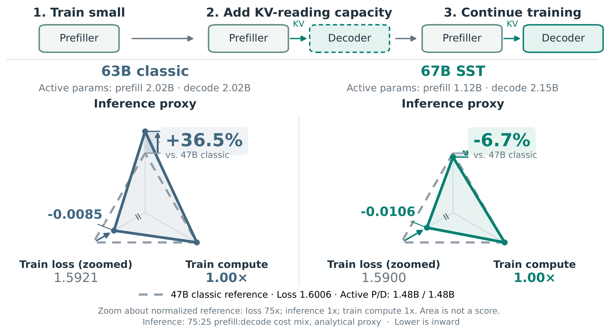
Figure 1: KITE: training route and observed trade-offs. Both panels use the same 47B transformer trained from scratch as the reference; lower is inward. Active counts exclude embedding/head. The inference proxy is 0.75p + 0.25d, where p and d are bulk-prefill and decode active-body counts normalized to the reference.
三张图叠在一起看:顶部是训练路线(1. 先训小模型 → 2. 加 KV 读取容量 → 3. 继续训练);下面两个三角雷达共用同一个"47B 从零训练"的灰色虚线参考,三角的三条轴分别是训练损失(放大 75× 显示) 、训练算力 、推理成本代理 。左:63B classic,推理代理比 47B 高 36.5% (2.02B/2.02B 的 prefill/decode 活跃参数都更大),训练损失好 0.0085。右:67B SST,训练损失好 0.0106 、训练算力 1.00×,推理代理反而低 6.7% ——因为 prefill 只要 1.12B 活跃参数(比 47B 的 1.48B 还少),代价是 decode 2.15B 略高于 63B 的 2.02B。图注特别声明"面积不是分数",三角只用来同时展示三条轴的方向;推理代理是解析估计,不是实测服务加速。
报告 p.1
💡 点击任意图片可查看原始高清大图,再次点击或按 Esc 关闭。
读数约定: 本页全部数字以论文原文为准;凡由本页依据论文配置整理、归纳或换算的内容,均以「整理 」「推算 」显式标注,便于与论文口径区分。记号沿用论文:$L$ 为塔的层数,$p$ 为 bulk-prefill 活跃体参数,$d$ 为 decode 活跃体参数,激活参数均指 body(不含 embedding/head)。
源模型 → 扩展后
33.819B → 66.959BPrefiller 保留源塔,Decoder 为新增(Table 2)
激活体参数(prefill / decode)
1.120B / 2.155B对照 47B:1.477/1.477;63B:2.016/2.016
训练 EMA-200 损失
1.590047B classic 1.6006;63B classic 1.5921
推理成本代理(75:25)
0.933vs 47B=1 低 6.7%;vs 63B=1.365 低 31.6%
累计训练 token
390.54B167.98B 源阶段 + 222.55B 续训;≈100% Bref
下游 7 任务
全部第一OpenBookQA 75.00、MMLU 60.54、GSM8K 58.38、MATH 34.36、HumanEval 37.80、MBPP 51.40、BBH 52.74(Table 3)
小结: KITE 不是某一层注意力技巧,而是"扩哪里 "的架构级选择:凡是需要产生未来 KV 的路径都不加容量。SST 只是这个原则最朴素的实现——两塔串联、层级对齐 KV 复用;论文自己也说它不是最优设计(§7 Discussion),只是足以证明范式有效。全文最值得记住的一条边界:未来 KV 的产生不得依赖 Decoder 的历史状态 ,这条约束换来的是"prefill 永远只按源模型大小计价"。
02 · Background & Motivation
背景:只省一边,不算省
大模型服从 scaling 规律——规模换能力(Kaplan et al., 2020;Hoffmann et al., 2022),代价是训练与推理两侧的算力账单一起变厚。于是"如何在更低的计算成本下把模型做大"成了核心问题之一,而且论文强调:这个目标不只是省钱,而是同一个预算能训出/服务更强的模型 。
MoE 是已经被验证的成功范例(Switch Transformers, Fedus et al., 2022;Shazeer et al., 2017):固定参数总量,稀疏专家路由同时降低训练与推理计算——也就是说,MoE 之所以成立,是因为它同时省了两侧 。论文由此点出一个容易被忽略的判据:只在单侧省钱,整体 trade-off 未必改善。两条已有的单侧路线恰好构成对照:
Progressive upcycling (渐进升格,Net2Net: Chen et al., 2016;SPARKLING: Yu et al., 2026) :先训小模型、中途长成目标模型,大量 token 跑在便宜图上,省的是训练 。但升格模型普遍被认为不如同尺寸从零训练的模型,于是"训练省下的钱在推理时还回去"——服务满血模型,却拿不到满血质量。KV 复用(YOCO 家族:Sun et al., 2024;DeepSeek-V4.1-Flash, 2026;KV-Mirror, WeChat AI, 2026) :让深层复用浅层算好的 K/V,模型变大时 prefill 仍可负担,省的是推理的 prefill 。但删减产 KV 的层可能牺牲质量,补回同等质量往往要更大模型或更长训练——本质上是训练成本 的损失。
KITE 的出发点就是把这两个账本合起来算:把"扩容"这件事限制在不影响 KV 的区域 。新增容量中途才出现(训练便宜),不参与 KV 计算(prefill 便宜),而两塔联合训练把质量补回来(不欠账)。论文同时说明,这条路线与 MoE、混合注意力等已有设计正交 ,可以叠加使用;SST 里的 MoE 层就是"叠加"的证据。
03 · Observation
观察:agentic 负载是输入主导的,先省 prefill 最划算
为什么优先省 prefill 而不是 decode ?论文的论据来自 agentic 的真实负载形态:反复的模型调用会不断处理累积的上下文与新的工具输出 (SWE-agent: Yang et al., 2024;ReAct: Yao et al., 2023),即使有 prompt 缓存,仍有大量未命中的输入需要重新 prefill。为量化这一点,论文抓取了 OpenRouter 公开的模型活动数据(Aug 22–Sep 20, 2026 UTC),选出六个模型统计:
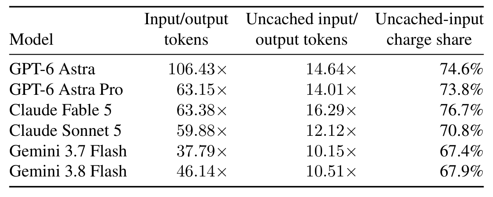
Table 1: Input demand in selected OpenRouter traffic. Input includes cached tokens; output includes reasoning tokens. Charge share is uncached-input charges divided by uncached-input plus output charges, excluding cache-read charges. Estimates aggregate available standard and Batch activity within August 22–September 20, 2026 (UTC), using September 21 base prices. Details appear in Appendix A.
三个比值一列比一列"刺眼":Input/output tokens 全在 37.79×–106.43× 之间(Gemini 3.7 Flash 最"温和",GPT-6 Astra 最极端);把缓存命中剔掉后的 Uncached input/output 仍有 10.15×–16.29×;Uncached-input charge share 落在 67.4%–76.7% 区间——也就是说,按未缓存输入费+输出费计,大头(约 2/3 到 3/4)花在"读输入"上。这就是论文选择"优先省 prefill"、并把 75:25 当作代表性 prefill:decode 成本权重的依据。注意口径:这是 token 量与挂牌价的解析估计 ,不是 GPU 实测成本,也不代表六家流量都是 agentic 场景。
报告 p.2
记账方式在附录 A 给出:设 $P$ 为总输入 token、$C$ 为缓存命中、$U=P-C$ 为未缓存输入、$D$ 为输出(含推理)token,按各模型挂牌价 $a_v$、$o_v$ 估计未缓存输入费用 $A$ 与输出费用 $O$,得到未缓存输入的账单占比:
$$A = 10^{-6}\sum_v U_v a_v,\qquad O = 10^{-6}\sum_v D_v o_v,\qquad s_{\text{uncached}} = \frac{A}{A+O}. \tag{6}$$
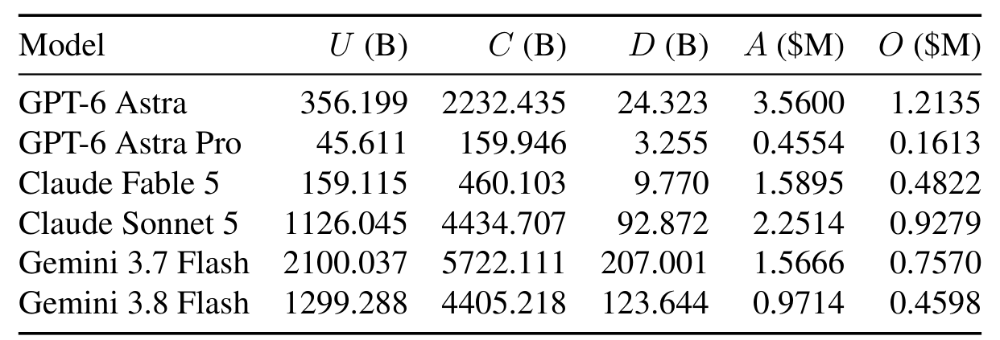
Table 4: Components underlying Table 1. Token counts are in billions; estimated charges are in millions of USD. U is uncached input, C cached input, and D output. Ratios use unrounded totals.
把 Table 1 的三个比值拆回原始量:每个模型的未缓存输入 $U$、缓存输入 $C$、输出 $D$(单位 B)与估算费用 $A$、$O$(单位百万美元)。读两处反差:① 缓存命中占比极高——Gemini 3.7 Flash 是 5722B/2100B(缓存约为未缓存的 2.7 倍),说明 prompt caching 已经很有效,但剩下的未缓存输入依然是主要开销;② 输出 token 相对输入是零头(Astra: 24.3B vs 356.2B),而输出单价通常是输入的 5 倍(10/50、2/10、0.75/3.75 每百万 token),论文用这个定价结构解释为什么"输出费并没有因为量小而消失",但未缓存输入费仍然占大头。论文同时声明:不含缓存写溢价、上下文长度与各 provider 的差异定价、历史调价与非 token 费用,也不是 真实账单。
报告 p.10
有了这个权重,论文把"推理成本"写成一个可比较的解析代理:$\text{proxy} = w\,p + (1-w)\,d$ ,$p$、$d$ 分别是 bulk-prefill 与 decode 的活跃体参数,对 47B classic 归一化;$w=0.75$ 即 75:25 的 P:D 成本混合。图 1 用它给出 0.933(SST)与 1.365(63B)的对照;第 6 节图 5 会把这个权重从 0:100 扫到 100:0,看谁在什么区间便宜。
口径提醒(整理): 论文反复强调这些是 analytical cost estimates, not measured serving speedups ——代理只比较"每 token 需要多少参数参与计算",不含 kernel 效率、通信、KV 显存带宽、批处理与调度等真实服务因素。本页后文所有"低 x%"都继承这个口径。
04 · Method
方法:KITE 的设计原则与 SST 两塔
4.1 设计原则:结构性不变式,而不是冻结权重
论文把因果模型拆成一个产生可复用注意力记忆的 Prefiller $P$ 和一个做预测的 Decoder $D$:
$$(M_t,\, z_t) = P(x_{1:t};\,\theta_P),\qquad \ell_t = D(x_t,\, z_t,\, M_t;\,\theta_D), \tag{1}$$
其中 $M_t$ 是可复用注意力记忆(即各层的 K/V),$z_t$ 是 Prefiller 在位置 $t$ 的可选特征,$\ell_t$ 是下一 token 的 logits。流程是:先完成小模型(源模型)阶段,再用中间 checkpoint 扩展 $D$ ——保留 Prefiller 的计算图与记忆接口——然后两部分联合继续训练。
论文特意澄清:不变式是结构性的,既不冻结权重、也不冻结 KV 值 。真正被限制的是三条:
Decoder 不得产生 未来位置所需的记忆(K/V 只能由 Prefiller 造);
生成时要能整体跳过 Decoder 的历史位置,因此它保留位置的表示必须在给定 Prefiller 输出后独立于被省略的 Decoder 位置 ;
bulk prefill (Prefiller 执行的、覆盖整个 prompt 的 KV 构造)不因扩容而增长 ;
在这三条之下,预测容量可以自由增长,而 prefill 的计价对象(tokens × 源塔大小)不变。唯一必须保留的额外计算是两个"边角":第一个输出 token 的末位读出 (Decoder 只算 prompt 最后一个位置),以及 decode 阶段 Decoder 的逐 token 工作。
4.2 SST:两座等深塔,层级对齐的 KV 复用
SST 用两座 Transformer 塔实现这个原则(Prefiller 与 Decoder,正文实验中各 18 层)。Prefiller 先执行、产出逐层 的 KV;Decoder 每个 block 自己算 query,读对应 Prefiller 层的 KV:
$$q^{D}_{l,t} = Q^{D}_{l}\!\left(h^{D}_{l-1,t}\right),\qquad a^{D}_{l,t} = \mathrm{Attn}\!\left(q^{D}_{l,t},\; K^{P}_{l}\!\left[I_l(t)\right],\; V^{P}_{l}\!\left[I_l(t)\right]\right). \tag{2}$$
这里 $Q^D_l$ 含 query 投影与归一化;$I_l(t)$ 是原模型因果 full/sliding 注意力掩码允许的位置集合;两塔都用源模型的位置 id 。Decoder 有独立的 block 参数,其残差与 FFN/MoE 运算都是 token-local (逐 token 独立)——这是"可以跳过历史位置"的根本原因。
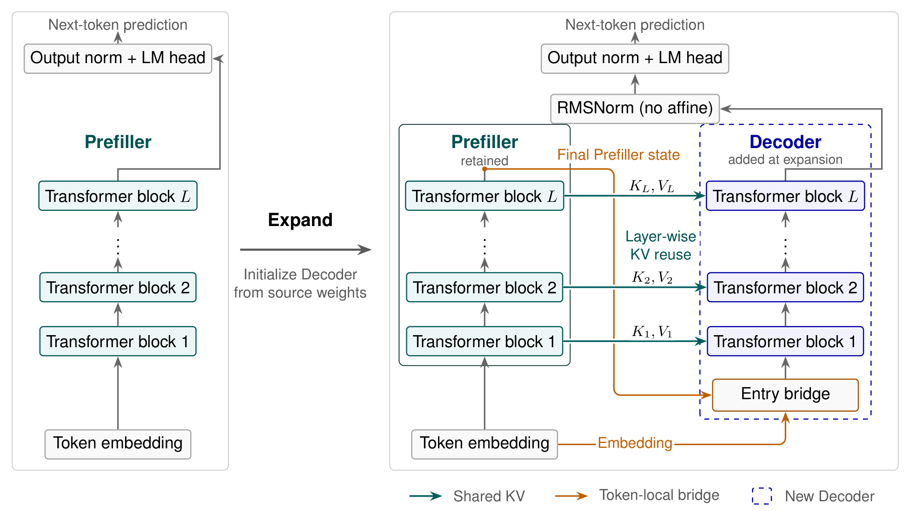
Figure 2: KITE instantiated with SST. Stage 1 trains the Prefiller; expansion adds a Decoder initialized from the source weights, and Stage 2 continues training both towers jointly. Within Stage 2, the Prefiller executes in full before the Decoder. Each Decoder block uses aligned Prefiller KV. A token-local entry bridge combines the separately normalized embedding and final Prefiller state. The final Decoder state is normalized and passed to the shared output norm and LM head for prediction.
左边是"扩展前":一座源 Transformer(Stage 1 只训它);中间 Expand :把源权重复制进 Prefiller 与 Decoder 两塔;右边是扩展后的 SST 全图,三类连线用颜色区分——绿色(Shared KV) 是层级对齐复用:$K_L,V_L$ 从 Prefiller 第 $L$ 层直接进 Decoder 第 $L$ 层;橙色(Token-local bridge) 是只在 token 内部传递的路径:embedding 与"Final Prefiller state"各做一次无仿射 RMSNorm 后相加,从 Entry bridge 进入 Decoder,Decoder 末态再经 RMSNorm(no affine)与共享的 output norm + LM head 出下一个 token;蓝色虚线(New Decoder) 标记扩展时新增的组件。注意 KV 输出端只画在 Prefiller 的每个 block 上(绿色向右的箭头),Decoder 自身不产 KV。
报告 p.4
入口桥与读出各有一个轻量设计。对共享的 embedding/stem $e_t$ 和 Prefiller 末层状态 $h^{P}_{L,t}$,入口桥是无训练参数 的 RMS 操作之和:
$$h^{D}_{0,t} = \mathrm{RMS}_\epsilon(e_t) + \mathrm{RMS}_\epsilon\!\left(h^{P}_{L,t}\right),\qquad \mathrm{RMS}_\epsilon(v) = \frac{v}{\sqrt{\mathrm{mean}(v^2)+\epsilon}}, \tag{3}$$
其中 $\epsilon = 10^{-5}$。Decoder 的末态则通过共享的输出归一化与输出头产生 logits:
$$\ell_t = W_{\text{out}}\,\mathrm{Norm}_{\text{out}}\!\left(h^{D}_{L,t}\right). \tag{4}$$
两塔共享一份 embedding、输出归一化与输出头;embedding 与输出头权重不绑定(untied)。梯度有两条回流 Prefiller 的路径:入口桥与复用的 KV。给定 Prefiller 输出后,每个 Decoder 位置与更早的 Decoder 状态无关——这条性质让"prefill 只算末位"在数学上成立,而不只是工程近似。
4.3 把配置落到层号与参数:一份走查
论文的对照梯子有四个点:33.819B 源模型、66.959B SST,以及同族的 47B / 63B 经典 Transformer(同 tokenizer、同数据配方、同训练协议、同评测集)。先把架构配置摆齐:
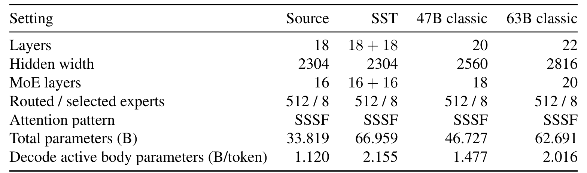
Table 2: Model configurations.
七个维度里藏着 SST 的"账怎么算":源塔与 SST 的每塔都是 18 层、hidden 2304、16 个 MoE 层、512 选 8 专家、SSSF 注意力 ——SST 的"18 + 18"表示两塔;47B 走的是"更深更宽"(20 层/2560、18 个 MoE 层),63B 是 22 层/2816、20 个 MoE 层。关键的三个数:总参数 33.819 → 66.959 ;decode 活跃体参数 SST 2.155 (比 63B 的 2.016 高)、47B 1.477;而 SST 的 prefill 活跃体参数只有 1.120 ——比 47B classic 的 1.477 还低 24%。表注补充两条口径:每塔以两个 dense FFN 层开头;SSSF 指"三个 sliding 层 + 一个 full-attention 层",18/22 层的余数按 SF 收尾。
报告 p.5
再往下到几何与参数账。附录 B 给出每塔的详细几何与"有效架构"口径:
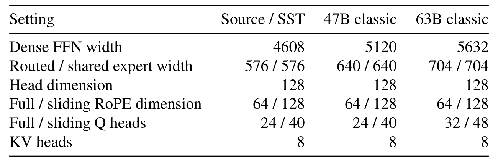
Table 5: Detailed geometry. Source/SST dimensions apply to each tower; both have two initial dense FFN layers. RoPE denotes rotary position embeddings.
六行里最该记住的是最后两行:全注意力/sliding 的 Q 头数 24/40,KV 头数只有 8 ——GQA 式共享,源塔、SST、47B 都是 8,只有 63B 把 Q 头加到 32/48。这解释了为什么 63B"只大了几层"却把 decode 活跃参数抬到 2.016B:它同时加宽了 FFN(dense 5120、专家 640)与 Q 投影。RoPE 维度 64/128(全/sliding)、head dim 128,全线一致。表注还说明:Source/SST 列的两塔几何相同,只有 Prefiller 保留 K/V 投影与 K 归一化(见 Table 6 后的账)。
报告 p.10
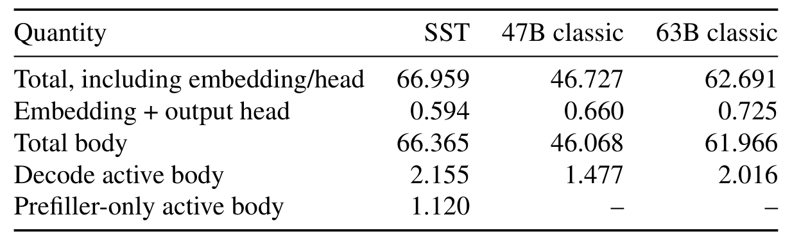
Table 6: Architectural parameter counts in billions, rounded to three decimal places.
这就是"prefill 便宜"的出处:三行并列读——SST 总参数最大(66.959 > 63B 的 62.691),embedding+head 三者相近(0.594/0.660/0.725),但 Decode active body 2.155 与 Prefiller-only active body 1.120 是两个不同的量:decode 时两塔都要动,prefill(以及任何只建 cache 的阶段)只动 Prefiller。论文的定义口径:活跃体参数不含 embedding/head 、按每 MoE 层 Top-8 路由专家 + 共享专家 + router + 其余每 token 需要的体权重的配置张量形状计数,并与导出的权重清单核对;词表导出 128,815 行(训练用填充词表 128,896),输出头不计入活跃体参数,但论文提醒它在 prompt 边界与 decode 仍然要算进真实服务成本。
报告 p.10
走查(推算):66.959 与 2.155 是怎么凑出来的。 把 SST 视为"源塔复制两份 − 只保留一份的共享件 − Decoder 不需要的件":$2 \times 33.819 = 67.638$;减去重复的 embedding/head($0.594$,只留一份)得 $67.044$;再减去 Decoder 塔缺的 K/V 投影与 K 归一化 ——每层约 $2 \times 2304 \times (8 \times 128) \approx 4.72$M 参数,$\times 18$ 层 $\approx 85$M,得 $66.959$,与 Table 6 一致。同一个 85M 也能解释活跃参数:SST decode 活跃 $2.155 = 1.120$(Prefiller)$+ 1.035$(Decoder,即源塔活跃 1.120 减去它没有的 0.085);prefill 活跃则就是 $1.120$。论文只给出结果数字(Table 2/5/6 与附录 B 的口径说明),这条差额拆解是本页依据其口径的归纳,供核对时参考。
最后把执行流程按三段钉死(§2.3,这也是全文最该背下来的一段):
Training :扩展后两塔联合训练。Prefiller 处理整条序列,Decoder 计算每个被监督位置,梯度经"复用的 KV"回传进 Prefiller;$e$ 与 $h^P_{L}$ 两个入口也把梯度带回;Prefill :Prefiller 处理完整 prompt $x_{1:n}$ 产出逐层 KV cache;Decoder 只需算末位 $n$ (读 Prefiller 的 KV)就能预测第一个输出 token——更早的 Decoder 位置因 token-local 而可整体省略;Decode :每个新 token 过两塔——Prefiller 扩展 KV cache,Decoder 读 KV 出下一个 token 的预测。
小结: 这套设计把"扩容"和"KV 构造"解耦:新容量以 Decoder 塔的形式存在,只加 decode 与末位读出的计算;Prefiller 塔与源模型逐位对齐,让 KV cache 与源模型完全同构。代价写在明面上——decode 变重了 (1.12B → 2.155B),所以它押注的是 prefill 主导的工作负载(见第 3 节与图 5)。
05 · Training & Systems
训练与系统:扩展怎么接、算力账怎么算
5.1 扩展与继续训练
扩展动作很朴素:把源模型每一层复制到 Prefiller 与 Decoder 的对应层 ,两塔共享一份 embedding、输出归一化与输出头。之后两塔在 BF16 下联合训练,沿用源模型的 Muon(Liu et al., 2025)与 Adam(Kingma & Ba, 2014)参数组:保留 Prefiller 与共享参数的优化器状态,Decoder 用全新状态 ;所有组接着源模型的 cosine 学习率计划走,把剩余的衰减摊到续训阶段,Decoder 不单独做 warmup(细节在附录 D)。
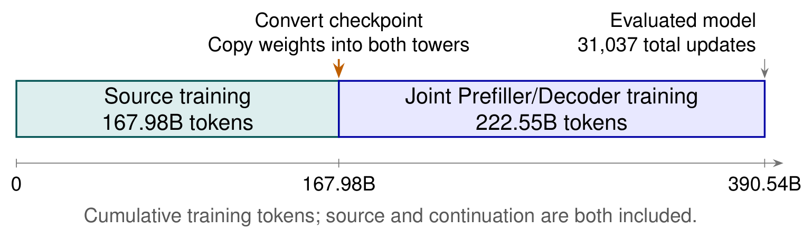
Figure 3: Training route to the evaluated SST checkpoint: 13,350 source steps followed by 17,687 continuation steps.
一条时间轴把 SST 的"两辈子"画清楚:源训练 167.98B token(13,350 步) → 中间淡蓝色小块是 checkpoint 转换/权重复制 → 联合 Prefiller/Decoder 训练 222.55B token(17,687 步) ,合计 390.54B token、31,037 步 。图内注记"cumulative training tokens; source and continuation are both included"是全文口径的锚点:SST 报告的任何训练成本都包含源阶段——这正是它敢和从零训练的基线比算力的原因。
报告 p.5
5.2 累计训练算力:三条模型怎么"同等预算"
论文用理论 FLOPs 对齐预算。对源阶段与续训阶段的 token 数 $D_s$、$D_c$ 与 forward FLOPs/token $f_s$、$f_c$(均按有效架构 计):
$$C_{\text{train}} = 3\,(D_s f_s + D_c f_c), \tag{5}$$
系数 3 近似前向+反向。被评测的 47B classic checkpoint 定义基准 $B_{\text{ref}} \approx 5.16836\times 10^{21}$ FLOPs;论文的 forward 系数为 3.887488B(47B)、5.148513B(63B)、3.087252B(源)、5.410678B(SST)FLOPs/token——SST 保留两塔的注意力与 FFN/MoE,但只有一份 embedding、输出头与 KV 投影。
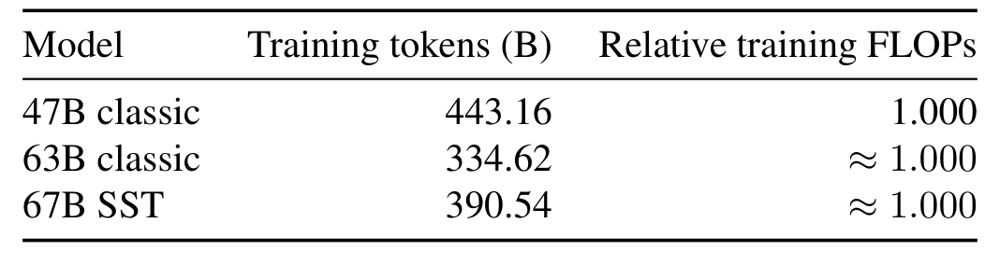
Table 7: Training budgets at the final checkpoints. Theoretical training FLOPs are normalized to the 47B classic reference.
三行数字解释了"同等算力"的字面意思:47B 用 443.16B token 训到 1.000 $B_{\text{ref}}$;63B 只需 334.62B token 就到 ≈1.000(每 token 更贵);SST 390.54B token (含源阶段)也是 ≈1.000。所以这不是"token 数对齐",而是"理论累计 FLOPs 对齐 "——SST 的 token 数介于两者之间,正是因为它前 43% 的 token 跑在更便宜的源图上。
报告 p.11
复算核对(推算): 按式(5)与论文给出的系数把自己算一遍——SST: $3\times(167.98\text{B}\times 3.087252 + 222.55\text{B}\times 5.410678) \approx 3\times(5.186\times10^{20} + 1.2042\times10^{21}) \approx 5.168\times10^{21}$;47B: $3\times 443.16\text{B}\times 3.887488 \approx 5.168\times10^{21}$;63B: $3\times 334.62\text{B}\times 5.148513 \approx 5.168\times10^{21}$。三者与 $B_{\text{ref}}$ 的偏差都在千分之一以内——"comparable cumulative training compute"是精算出来的,不是粗略说法。
5.3 训练配方与续训调度器
附录 D 交代了可复现性的关键参数:续训用 128 张 NVIDIA H800 、专家并行度 8、序列长 4,096、全局 batch 3,072 条序列;源阶段峰值基础学习率约 $1.03302\times10^{-3}$,续训基础 weight decay 0.15(沿用参数组乘子);源/SST/63B 的 token batch 为 12,582,912(47B 为 14,680,064)。Muon 用 6 步 Newton–Schulz,注意力按 head 切分打包、GLU 按投影类型切分;Adam 的 $\epsilon = 10^{-15}$。入口与末态的 RMS 操作以 FP32 累积、返回输入 dtype。
续训的学习率不是重新 warmup,而是从源模型的 cosine 相位接着走 :设 $u$ 为已消耗的续训 token、$U = 222{,}553{,}964{,}544$ 为配置的续训视野、$q_0$ 为转换点处源的归一化相位,则
$$q(u) = q_0 + (1-q_0)\min(u/U,\,1), \tag{7}$$
$$\eta(u) = \eta_{\min} + \left(\eta_{\text{anchor}} - \eta_{\min}\right)\frac{1+\cos\!\left(\pi q(u)\right)}{1+\cos(\pi q_0)}, \tag{8}$$
其中 $\eta_{\text{anchor}} \approx 5.96548\times10^{-4}$、$\eta_{\min} \approx 1.03302\times10^{-4}$。源计划的 warmup 覆盖 12.582912B token、衰减到 335.9605248B token;转换发生在 167.9818752B token ——论文特意说明 $q_0$ 是在 warmup 之后的衰减区间内测量的,不是 用转换位置除以整个视野。
复现视角(整理): 论文给出了套件级参数(卡数、并行度、batch、优化器、LR 调度、token 数),但训练数据配方只说"与基线同一套",未披露具体配比;这套 128×H800 的训练规模也不是第三方能低成本复刻的量级。因此这篇的证据形态是"自家 ladder 内的受控对比 ",而非可独立复现的实验——这一点在第 8 节点评里会再展开。
06 · Experiments
实验:损失、下游任务与推理成本
6.1 训练损失:转换点之后反超
先把最关键的一条曲线讲清楚:SST 的损失在转换点处先抬升、再在续训中单调下降 ,最后停在三者最低。最终 checkpoint 的训练 EMA-200 为 1.5900 (390.54B token 处)、47B classic 为 1.6006(443.16B token 处)、63B classic 为 1.5921(334.62B token 处)——即在可比累计训练算力下,SST 的训练损失低于两个参照。
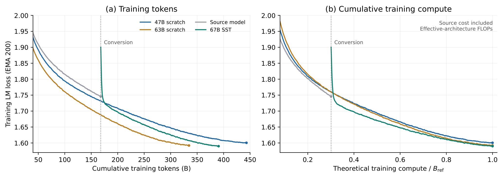
Figure 4: Training LM loss (EMA-200) against tokens and theoretical cumulative compute. Conversion occurs at 167.98B tokens (0.301Bref ).
左图横轴是累计 token、右图横轴是相对理论算力 $B_{\text{ref}}$;四条曲线分别是 47B scratch(蓝)、63B scratch(赭金)、Source model(灰)、67B SST(青)。读三件事:① 转换尖峰 ——源模型(灰)在 167.98B token 处损失约 1.75,扩展成 SST 后同一横坐标上跳到约 1.89,这就是"改预测图 + 新增 Decoder"的代价,需要续训消化;② SST 的下降斜率更陡 :青色曲线在约 200B token(右图约 0.55 $B_{\text{ref}}$ 附近)先后穿过 47B 与 63B 两条曲线,一路到终点;③ 终点贴得很近 :右图在 1.0 $B_{\text{ref}}$ 处三条线都在 1.59–1.60 区间,青色最低。图注口径:EMA span 200、`adjust=False`、转换后重启、取图前后先算 EMA 再下采样、保留最后一次观测;曲线值以读图为准,精确终点值以正文/Table 7 为准。
报告 p.6
6.2 下游任务:七项全胜 + NLL
论文在最终 checkpoint 上评七个任务,并用同一批 1,024 条冻结 packed-4K 样本算 ARXIV 留出集的 token NLL:
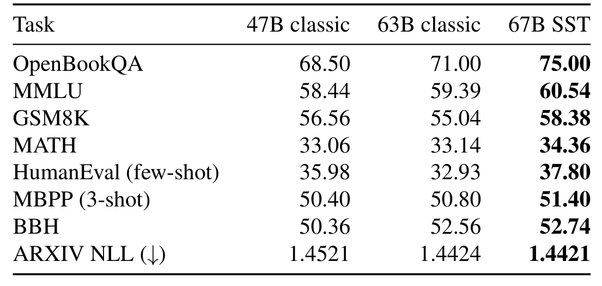
Table 3: Scores (%) on seven downstream tasks and held-out ARXIV token NLL (lower is better), evaluated at comparable cumulative theoretical training FLOPs, including both training stages for SST. OpenBookQA combines the validation and test splits; MMLU uses the test split, and MATH uses the full test set.
8 行里 SST 全部最优——但要看清幅度分两档:拉开明显差距的 是 OpenBookQA(75.00,比 63B 高 4.00、比 47B 高 6.50)、HumanEval(37.80,比 63B 高 4.87;注意 63B 在这里反而低于 47B)、GSM8K(58.38,比 63B 高 3.34);小幅领先的 是 MMLU(60.54,+1.15)、MATH(34.36,+1.22)、BBH(52.74,仅比 63B 高 0.18)、MBPP(51.40,+0.60)与 ARXIV NLL(1.4421,比 63B 低 0.0003)。也就是说"SST 最低训练损失换算成了最好的下游表现"这个结论成立,但其中若干项对 63B 的优势在噪声量级附近,不宜过度解读。
报告 p.7
6.3 推理成本:换什么权重、在什么区间便宜
图 5 把第 3 节的代理 $\text{proxy} = w\,p + (1-w)\,d$(归一化到 47B classic)在 P:D 成本混合上扫一遍:
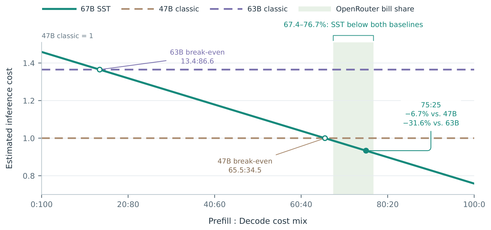
Figure 5: Estimated inference cost across P:D cost mixes, normalized to 47B classic. Shading spans the six-model OpenRouter reference range; open circles mark break-even points and the filled circle marks 75:25.
青色是 SST,两条参考线是 47B(1.0)与 63B(1.365);横轴从左到右 prefill 占比升高。两个空心圆圈是盈亏平衡点 :与 63B 在 13.4:86.6 打平、与 47B 在 65.5:34.5 打平;浅绿阴影是六个 OpenRouter 模型实测的未缓存输入账单占比区间(67.4–76.7%),实心圆标出 75:25 这个代表点——在该点 SST 比 47B 低 6.7% 、比 63B 低 31.6% 。也就是说:prefill 占比越高 SST 越划算 ;如果负载是 decode 主导(右侧),它的 2.155B decode 活跃参数会让它比 47B 贵。论文用这六个模型的实际区间给出结论:在整个高亮范围内 SST 比 47B 低 1.3–7.9%、比 63B 低 27.7–32.5%。
报告 p.7
口径重申: 图 5 与图 1 的推理成本都是解析代理 (0.75p+0.25d 一类权重下的参数计数比较),论文原话是 "analytical cost estimates, not measured serving speedups"。真实部署里 SST 的两塔执行是非对称的——prefill 只跑 Prefiller、decode 跑两塔——其调度、显存与 kernel 效率都会影响实际数字,这部分论文未测。
07 · Design Space & Related Work
设计空间:SST 只是一个点
讨论章(introduction 之后的 §5)把框架的边界与自由度都摊开:SST 提供的是 KITE 的一种 实现,而非唯一架构处方。它的"层对齐 KV 复用 + 入口桥 + Decoder-only 读出"都是具体选择;真正的中心要求只有一条——新增容量不得延长产生 KV 的计算、也不得引入需要历史 Decoder 状态的依赖 。
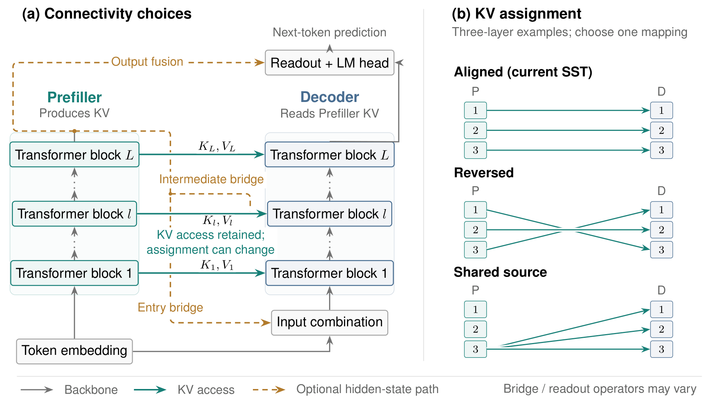
Figure 6: Connectivity choices within KITE. (a) An SST-style backbone with optional hidden-state connections at the Decoder entry, intermediate layers, and output readout. Dashed paths indicate design choices, not connections that must be enabled together. (b) Three illustrative KV assignments: aligned layer-wise reuse, reversed pairing, and reuse of one Prefiller KV source across multiple Decoder layers. The KV-producing computation remains on the Prefiller side; the illustrated choices are not assumed to have equal cost or quality.
(a) 画出三条可选 的隐状态通路(橙色虚线):Output fusion ——Prefiller 表示直接参与最终读出;Intermediate bridge ——在第 $l$ 层把 Prefiller 状态喂进 Decoder;Entry bridge ——SST 现在用的入口融合。灰色实线是骨架(Prefiller→Decoder 的 KV 读取),绿箭头是 KV 访问。(b) 三张"三层一例"的 KV 分配示意:Aligned (当前 SST,同层对齐)、Reversed (Decoder 逆序读 Prefiller 的层)、Shared source (多个 Decoder 层共用一个 Prefiller 层的 KV)。图注强调两点:KV 的产生始终留在 Prefiller 侧;这些选择不假设 等价——成本与质量都可能不同。论文明确说自己只探索了这个空间的一小部分,报告的是所选 SST 配置的性能,而不是最优连通模式。
报告 p.8
把 SST 放进文献坐标里(§6 Related work,引用为论文自身的标注口径):
模型增长 :Net2Net(Chen et al., 2016)研究保函数的模型增长;SPARKLING(Yu et al., 2026)关注宽度渐进学习中的信号保持与对称性破缺。SST 与它们的区别是:不追求保函数 ——对齐初始化后预测图被改变,靠随后的联合适配补回来。稠密→MoE 升格(Sparse Upcycling: Komatsuzaki et al., 2022;Upcycling LLMs into MoE: He et al., 2024)则是把稠密 checkpoint 变成稀疏专家,SST 是给"已经是稀疏 MoE 的源模型"加一座 Decoder 塔。KV 缩减一族 :MQA (Shazeer, 2019)、GQA (Ainslie et al., 2023)通过共享 KV 头减少存储;Cross-Layer Attention (Brandon et al., 2024)把共享扩展到相邻层。论文的定位:SST 不缩减 KV 规模,目标是"扩容的同时不延长 KV 产生路径"。YOCO 家族 :YOCO(Sun et al., 2024)把"产 cache"与"用 cache"的计算分离并据此做 prefill 提前退出;SST 把这个执行模式用于分阶段模型增长 ——YOCO 的 cross-decoder 共享一个全局 KV 表示,而 SST 读对齐后的逐层 KV,且由"源→目标扩展"构造而来。同族的还有 DeepSeek-V4.1-Flash(2026,本合集第 ⑦ 篇 )与 KV-Mirror(WeChat AI, 2026)。递归/参数绑定 :Mixture-of-Recursions(Bae et al., 2025)的固定 KV 循环,从架构视角可看作 KITE 所依托的家族的一个参数绑定特例;SST 则用独立的 Prefiller/Decoder 参数,扩容时不延长 KV 产生路径。
小结: 这一章的价值是把"一个模型"上升为"一个可搜索的设计空间":KV 分配(怎么连)、隐状态通路(连不连)、桥算子与两塔容量分配(多深多宽)都是待探索的维度。对读者的实用含义:如果你在做 YOCO 式或 CLA 式的工作,"扩容只加在消费侧"这条约束可以直接搬走 。
08 · Commentary
点评:亮点、账本与要补的测
8.1 技术来源一览
技术来源一览(据论文行内引用整理,非论文原表;引用为论文标注口径,本页未逐条核对参考文献条目)
组件 论文标注的上游 本代的改造 / 集成
两段式执行(cache 生产者 / 消费者分离) YOCO(Sun et al., 2024);DeepSeek-V4.1-Flash(2026);KV-Mirror(WeChat AI, 2026) 把该模式用于分阶段模型扩展:读"层级对齐 KV"(非全局单一 KV),并由源 checkpoint 扩展构造 模型增长 / 知识迁移 Net2Net(Chen et al., 2016);SPARKLING(Yu et al., 2026) 不保函数:复制成两塔后预测图改变,靠联合继续训练适配 稀疏化升格 Sparse Upcycling(Komatsuzaki et al., 2022);Upcycling LLMs into MoE(He et al., 2024) 源模型本身已是稀疏 MoE;SST 给已稀疏的源加 Decoder 塔,而非稠密→稀疏 KV 头共享 MQA(Shazeer, 2019);GQA(Ainslie et al., 2023) 不改 KV 头数(全线 8 组 KV 头);目标不是缩小 KV,而是让 KV 生产者不扩容 跨层 KV 共享 Cross-Layer Attention(Brandon et al., 2024) 共享方向从"相邻层"改成"跨塔同层"(Aligned),并在 §5 讨论 Reversed / Shared source 变体 固定 KV 的循环 Mixture-of-Recursions(Bae et al., 2025) 论文将其视为参数绑定特例;SST 用独立两塔参数、参数不绑定 输入主导负载的证据 SWE-agent(Yang et al., 2024);ReAct(Yao et al., 2023) 自采 OpenRouter 公开活动数据(Table 1/4)量化未缓存输入占比,替代单点引用 优化器与位置编码 Muon(Liu et al., 2025);Adam(Kingma & Ba, 2014);RoPE(Su et al., 2021) 续训沿用源模型的参数组与 cosine 相位;两塔共享位置 id
8.2 值得肯定的三点
把"扩哪里"变成一等公民。 多数扩容/升格工作关心"扩多少",这篇关心"扩在哪个区域不破坏什么"——KV 不变式给出的是一个可复用的架构约束,而不只是 SST 这一张图。三个成本轴一起报账,且账目透明。 训练预算含源阶段(390.54B token)、$B_{\text{ref}}$ 与四个 forward 系数都给出,复算能对上(本页 5.2 的核对);推理侧坦白使用解析代理并反复声明不是实测加速——比"含糊地宣称更快"要诚实得多。对照梯子控制得干净。 同 tokenizer、同数据配方、同训练协议、同评测集,47B/63B 是"同族扩深扩宽"而来,SST 又在同族之上——把"scaling 范式"的变量与"模型族"的变量分开了。七项下游 + 留出 NLL 全胜,方向一致。
8.3 未披露、值得补测的点
实测服务加速缺位。 全文用 0.75p+0.25d 的解析代理,未见任何端到端吞吐、TTFT / TPOT 或显存实测。SST 的 prefill 只跑 Prefiller、decode 跑两塔,是非对称执行 :真实引擎里 cache 布局、调度粒度与 kernel 形态都会变——值得在 vLLM / SGLang 上量一次"prefill 省下的参数"能兑现多少 wall-clock。论文自述结论也止于"without establishing... measured serving speedup"。扩展时点的敏感性未见扫描。 167.98B / 222.55B 的 43:57 切分是给定值;"何时扩展最划算""扩展比例多大"没有扫描,也没有把 SST 的损失–算力曲线与不同转换点的曲线并排——而这恰是 KITE 范式最核心的超参数。容量分配未探。 两塔等深等宽(各 18 层 / 2304)是设计选择,论文明确说未探索最优连通与容量分配。Decoder 更浅/更窄、或采用 §5 的 Reversed / Shared source 分配会怎样,是留给后续的直接问题。单次运行的方差与统计口径。 所有数字来自一次训练运行:损失差(对 63B 仅 0.0021)与下游小分差(如 BBH +0.18)没有种子/重复实验支撑;论文也未披露评测的采样设置细节(如 few-shot 数之外的温度、重复次数)。两塔 KV/显存账未展开。 按架构 Decoder 不产 KV,cache 应与源模型同量级——但论文未给出实际 KV cache 大小、两塔激活显存与 prefill 阶段的批处理效率;对做部署的人来说,这几项决定了"解析省"能否变成"工程省"。另:数据配方只说"与基线同一套",未披露具体配比。
8.4 一句话判断
这是一篇范式论文 :真正的贡献是把"KV 不变"立成扩容的约束,并用一个足够简单、账目足够透明的实例(SST)证明它在一个算力点上确实三方同向。它的弱点也同样清楚——所有"更省"都是解析代理,所有"更强"都来自单次运行的一段梯子。值得当作方法论读:凡是增长的部分,先问它是否落在需要产生未来状态的关键路径上 。
Glossary
术语速查
阅读中遇到缩写,可随时回到这里;正文里的缩写也可悬停查看释义。
阅读术语表(正文中带虚线下划线的缩写悬停可见)
缩写 全称 一句话解释
KITE KV-Invariant Transformer Expansion 论文提出的扩容范式:新增容量放在不影响 KV 构造的区域 SST Step Scale Transformer KITE 的具体实现:Prefiller + Decoder 两座等深塔串联执行 Prefiller — 第一座塔:处理完整 prompt、产出逐层 KV;唯一包含 K/V 投影与 K 归一化的部分 Decoder — 第二座塔:自己算 query、读 Prefiller 的对齐层 KV 做预测;不产 KV,运算 token-local bulk prefill — 覆盖整个 prompt 的 KV 构造过程;KITE 中它只由 Prefiller 执行,故成本不随扩容增长 decode — 自回归逐 token 生成阶段;每个新 token 需过两塔 活跃体参数 active body parameters 每 token 实际参与的体参数(不含 embedding/head),经 Top-8 路由专家等配置张量形状计数 Upcycling — 用小模型 checkpoint 初始化大模型的训练方式;KITE 属其"中途扩容"一类 YOCO You Only Cache Once 分离 cache 生产/消费、让深层复用浅层 KV 的架构家族;DeepSeek-V4.1-Flash 与 KV-Mirror 同族 SSSF Sliding-Sliding-Sliding-Full 注意力模式:三个 sliding-window 层后接一个 full-attention 层,余数按 SF 收尾 EMA-200 Exponential Moving Average, span 200 训练损失的指数滑动平均(span 200、adjust=False、转换后重启) P:D mix prefill : decode cost mix 推理成本中 prefill 与 decode 的权重划分;论文代表点 75:25 推理代理 inference proxy $wp+(1-w)d$ 用活跃体参数加权的解析成本估计,非实测服务加速 $B_{\text{ref}}$ reference training FLOPs 由被评测 47B classic checkpoint 定义的理论累计训练算力基准 $\approx 5.16836\times10^{21}$ MoE Mixture-of-Experts 稀疏专家混合;SST 源塔与两座基线塔均沿用 512 选 8 的 MoE 设计 Muon / Adam — 续训使用的两组优化器(6 步 Newton–Schulz / $\epsilon=10^{-15}$),沿用源模型参数组与相位 EP Expert Parallelism 专家并行度;续训配置为 8(128 张 H800) NLL Negative Log-Likelihood 留出集上的 token 负对数似然,ARXIV 留出集越低越好